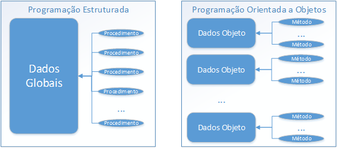

Definição de POO
Início
Os Pilares da OO
O que são atributos?
O que são métodos?
O que são pacotes?
O que é uma interface em Java?
O que são enumerações?
O que é Serialização de Objetos em Java?
;
O que é relacionamento de objetos?
Referências Bibliográficas
Digite classe ou objeto:
POO

Definição de Poo
Características da programação OO